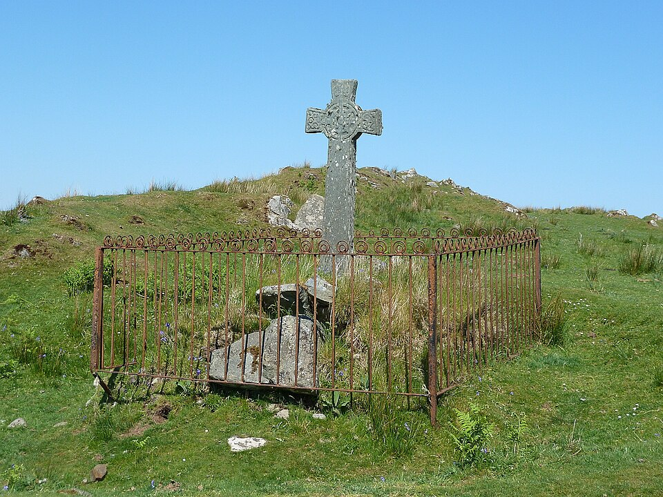
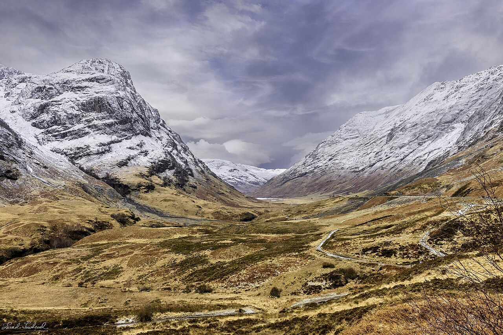
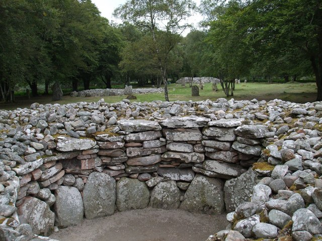
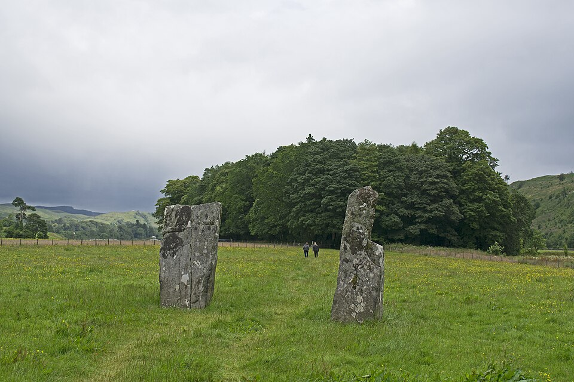
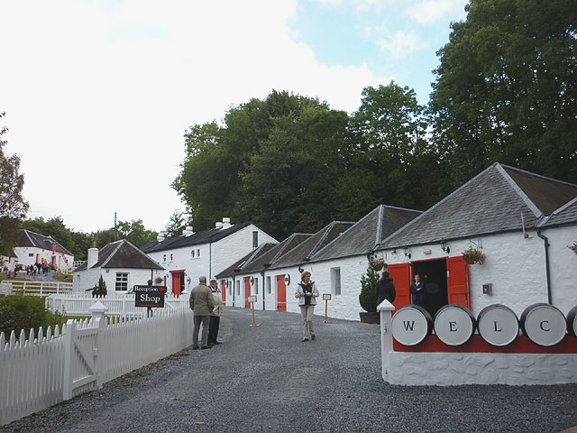
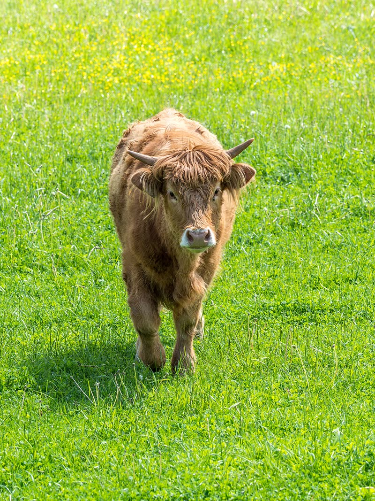

Fly to a remote island of 3,000 people in the Inner Hebrides. White sand beaches, crashing Atlantic waves, and some of the most legendary distilleries on earth.
📸 What You'll See

Bruichladdich Distillery

Lagavulin & Castle Ruins

Machir Bay Beach

Kilchoman Farm Distillery

Kildalton Cross — 8th Century Celtic High Cross
🥃 Distilleries
- ⭐Bruichladdich — The main event. Book the Warehouse Experience or Black Art tasting — not just the standard tour
- 🌾Kilchoman — Scotland's most remote farm distillery. They grow their own barley right there
- 🏰Lagavulin — Warehouse tasting with views of Dunyvaig Castle ruins on the cove
- 🦭Bunnahabhain — Most remote on the island. Seals on the rocks. Least peaty Islay malt
🏛️ History & Nature
- ✝️Kildalton Cross — 8th century Celtic high cross, one of the finest surviving in Scotland
- 🏖️Machir Bay & Saligo Bay — Wild Atlantic beaches with dramatic cliffs
- 🦅Sea eagles, seals, and coastal wildlife everywhere
🚗 Getting Around
Hire a private driver/guide (~£250–350/day). Everyone drinks freely + local insider knowledge. Everything within 30 min.
The Bruichladdich factor: There is no mainland tasting room. Their identity is Islay — the terroir, the water, the sea air. If you want the real experience — cask-strength stuff that never leaves the island — this is the only way.
🌺 For Jess: Islay has gorgeous beaches, coastal walks, wildlife (seals, sea eagles), and the village of Port Charlotte is charming. But options beyond whisky + nature are more limited on a small island.
🌤️ July: 14–17°C, 17+ hrs daylight, coastal breeze keeps midges away
Tradeoffs
✅ PROS
- •Bruichladdich. No substitute
- •Island feel — truly away from it all
- •Private driver = zero stress
- •Concentrated, no long drives
- •Peak daylight, mild temps
⚠️ CONS
- •Flights limited (book early!)
- •Less scenic variety than Highlands
- •No grand megaliths or cairns
- •Fewer non-whisky activities
- •July midges (wind helps though)

Rent a car and drive through the Scottish Highlands. Ancient standing stones older than the pyramids, jaw-dropping glens, and craft distilleries most tourists never find.
📸 What You'll See
Glencoe — One of Scotland's Most Dramatic Valleys

Clava Cairns (4,000 years old)

Kilmartin Glen Standing Stones

Edradour — Smallest Distillery

Highland Coos 🐄
🥃 Distilleries (Sleeper Hits)
- 🏆Benromach (Forres) — Tiny, traditional, handcrafted Speyside. The anti-corporate distillery
- 🔮The Cairn (Grantown-on-Spey) — Ultra-modern, brand new. Sister to Benromach
- 🌊Deanston (near Stirling) — Converted cotton mill on a river, powered by waterwheel
- 🤫Edradour (Pitlochry) — Smallest traditional distillery in Scotland. Feels like a secret
- 🏔️Tomatin — Gorgeous Highland setting, under the radar
🏛️ Ancient Sites
- 🪨Kilmartin Glen — 350+ ancient monuments in one valley. Standing stones, cairns, 5,000-year-old rock carvings. Barely anyone goes here
- ⭕Clava Cairns (near Inverness) — 4,000-year-old burial cairns and standing stones. Inspired Outlander's Craigh na Dun
- ⛰️Glencoe — One of Scotland's most dramatic valleys. The drive alone is worth it
- 🌿Cairngorms National Park — Wild Highland scenery, hiking, red deer, golden eagles
🚗 Getting Around
Rental car from Glasgow. Total flexibility to stop anywhere. Note: driving on the left + single-track Highland roads is part of the adventure. Designated driver needed for distillery days.
🌺 For Jess: Way more variety — stunning hikes, charming villages, highland cows, ancient history at every turn, plus towns with shops and restaurants. Easier to split up and mix interests.
☀️ July: 15–20°C, longest days of the year, but popular routes get crowded
Tradeoffs
✅ PROS
- •Incredible scenery variety
- •Ancient megaliths (Kilmartin, Clava)
- •Something for everyone
- •Total flexibility, go anywhere
- •No flights to coordinate
⚠️ CONS
- •No Bruichladdich (Islay only)
- •Driving on the left, narrow roads
- •More planning needed
- •July crowds on A82/Glencoe
- •Designated driver = someone skips tastings